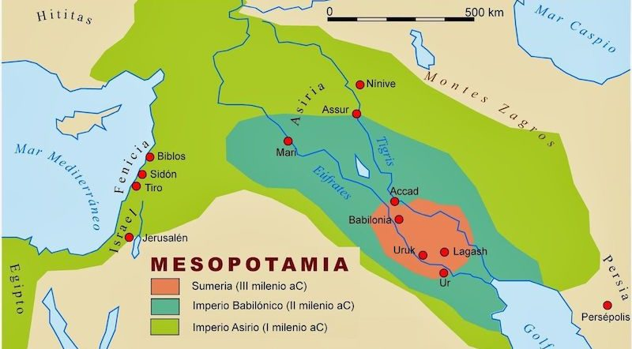
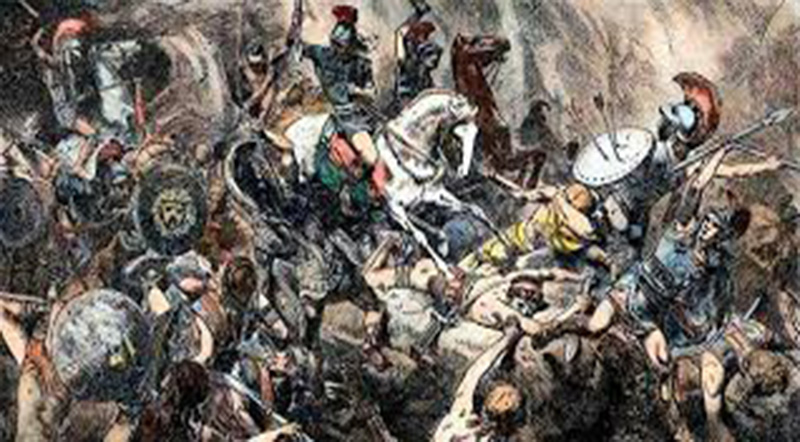
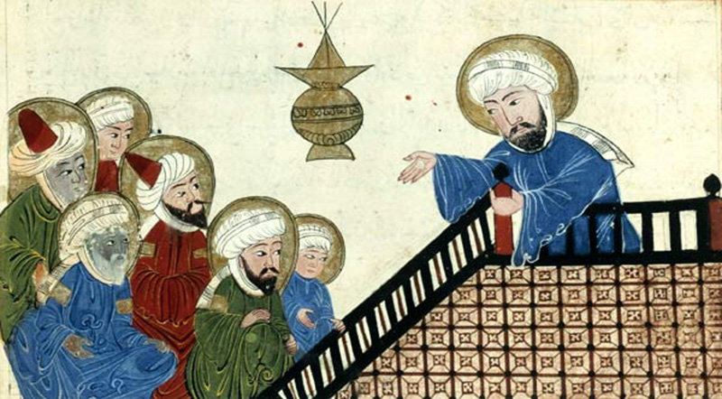
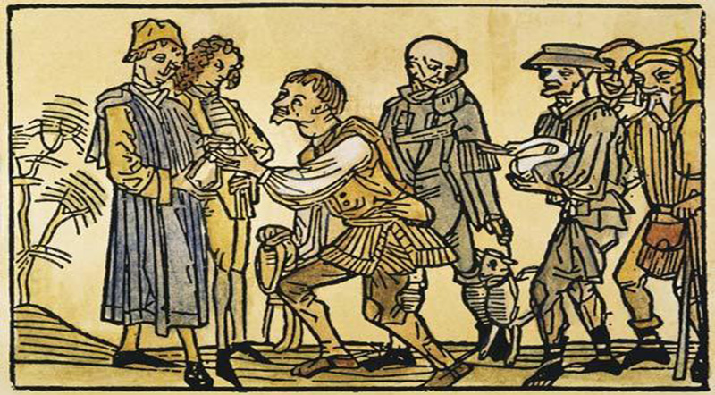
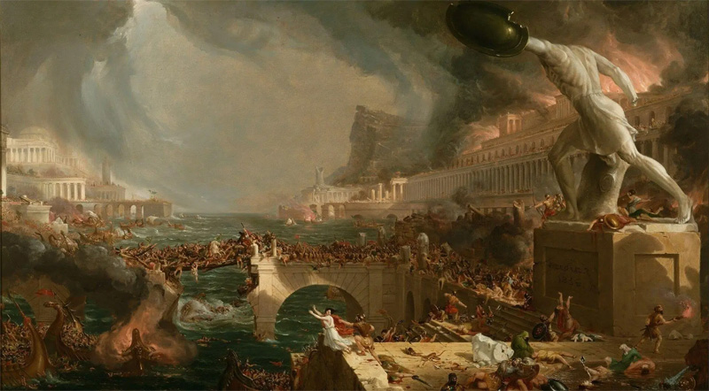

Este período abarca desde el surgimiento de las primeras ciudades-estado en Mesopotamia hasta el desarrollo de grandes imperios que buscaban expandir su dominio territorial y su influencia en la región.
4100 a.C-1750 a.C
Primeros imperios Mesopotámicos:
Sumeria inventó la escritura y la rueda. Babilonia destacó por su código de leyes y avances científicos. Asiria se caracterizó por su poderío militar y expansión territorial, llegando a conquistar Babilonia.

1274 a.C.
Egipto e Imperio Griego:
Egipto e hititas lucharon por el control de Kadesh, un importante centro comercial. Este conflicto culminó en el primer tratado de paz conocido de la historia. En Grecia, la Guerra del Peloponeso enfrentó a Esparta y Atenas, resultando en la victoria de Esparta y el declive de la hegemonía ateniense.

VI a. C.
Judaísmo, Cristianismo, y aparición de Mahoma:
El judaísmo es la más antigua de estas religiones monoteístas y sentó las bases para el cristianismo y el islam. El cristianismo se centra en la figura de Jesús y su mensaje de salvación. El islam, revelado a Mahoma, se basa en las enseñanzas del Corán.

27 a.C hasta el 476 d.C.
Surgimiento, auge y caída del Imperio Romano de Occidente, Inicio del Feudalismo:
El Imperio Romano de Occidente experimentó un período de auge antes de su eventual división y caída en 476 d.C. Este evento marcó el inicio de la Edad Media y el surgimiento del feudalismo como sistema socioeconómico en Europa.

1453
Caída del Imperio Romano Oriental (fin del feudalismo) y la Colonización de América:
La caída de Constantinopla en 1453 tuvo un impacto significativo en el comercio y la geopolítica europea. La colonización de América, que comenzó en 1492, transformó el mundo. Estos eventos coincidieron con el declive del feudalismo debido al ascenso de la burguesía y las crisis demográficas.

1618-1648
La Guerra de los Treinta Años y Paz de Westfalia:
La Guerra de los Treinta Años fue un conflicto europeo motivado por factores religiosos y políticos. La Paz de Westfalia (1648) estableció principios clave como la soberanía estatal y el equilibrio de poder.